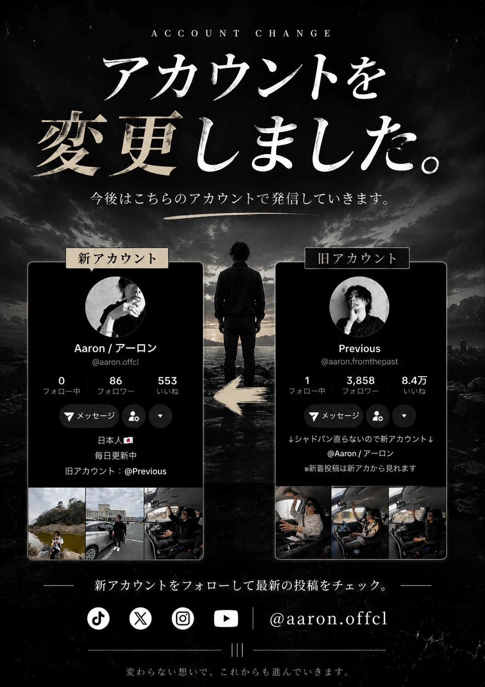

どうも。

悲しいお知らせですが、TikTokのアカウントが事実上のBAN状態になってしまいました。
3月頃にアカウントを開くと赤色で"おすすめとして表示されないアカウント"っていう表示が、
昨日上げた動画の再生数も流石に何かおかしいなってくらい悪かったです。
急いで異議申し立てをするも永遠に"Network issue. Please try again"
これは回線状態が悪い訳ではなく事実上のBAN状態のようです。
本当に色々試しましたが復活は無理そうでした。
理由として一番考えられるのはユーザーネームにofficial.jpを付けてしまったことのようですね。real,official,jpなどを付けると自動的に運営に弾かれてしまうみたいです。
最近自分の真似をしているような人がちょくちょくいるので本物のアーロンがどのアカウントか分かるようにと思って変えたのですがダメでしたね。
僕のスタイル的におすすめに載らないと再生全く取れないので、やむなくもう一つ新しいアカウントを作ることにします。
新アカウントはaaron.offclです。
ぜひフォローお願いします！